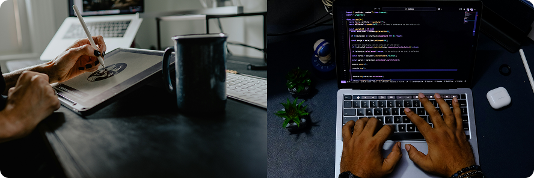

Di era digital yang terus berkembang dengan cepat, kemampuan di bidang teknologi menjadi salah satu skill paling penting untuk masa depan. Karena itulah, hadir IT Club SMKN 1 Surabaya sebagai wadah bagi siswa-siswi yang ingin berkembang, berkarya, dan berinovasi di dunia teknologi informasi.
IT Club bukan hanya sekadar ekstrakurikuler biasa. IT Club adalah tempat di mana kreativitas bertemu logika, tempat ide sederhana berubah menjadi karya luar biasa, dan tempat siswa belajar menjadi generasi digital yang siap menghadapi tantangan masa depan.
Di sini, anggota dapat belajar banyak hal mulai dari desain grafis, editing multimedia, hingga dunia programming dan pengembangan website. Semua pembelajaran dilakukan dengan suasana yang seru, kreatif, dan penuh kerja sama tim.
IT Club adalah ekstrakurikuler berbasis teknologi informasi yang bertujuan untuk mengembangkan kemampuan siswa di bidang digital, multimedia, dan pemrograman.
Ekstrakurikuler ini menjadi tempat bagi siswa untuk:
IT Club juga menjadi ruang eksplorasi bagi siswa yang ingin mengenal dunia industri kreatif dan teknologi modern lebih dalam.

IT Club SMKN 1 Surabaya memiliki dua divisi utama yang saling melengkapi, yaitu:
DEVGRAF (Development Graphic Design)
danPROGRAMMING.
IT Club SMKN 1 Surabaya adalah tempat bagi para kreator, inovator, dan calon developer masa depan untuk berkembang bersama.
Di sini, setiap ide memiliki tempat untuk tumbuh. Setiap kreativitas memiliki ruang untuk bersinar.
Dan setiap anggota memiliki kesempatan untuk menjadi lebih hebat dari sebelumnya 🚀✨